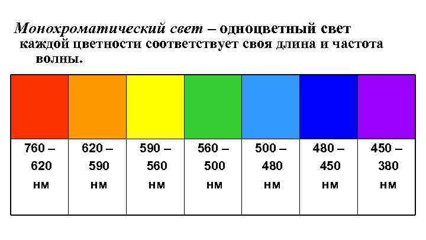

Решение
Предисловие
В данной задаче буду рассматривать нормальное падение лучей.
Почему?
Во-первых, при нормальном падении интерференционная картина
колец Ньютона имеет симметрию относительно оптической оси линзы, что существенно упрощает математические выражения
и расчеты.
Во-вторых, когда лучи падают перпендикулярно на поверхность линзы, оптический путь, пройденный ими,
зависит только от расстояния от центра линзы, а не от угла падения. Это позволяет использовать более простые формулы
для определения положения интерференционных полос.
Наконец, при нормальном падении поляризация света не влияет
на интерференционную картину, что дает возможность рассматривать только интенсивность без учета поляризации.
Физические понятия
Кольца Ньютона - это интерференционная картина, которая образуется в результате интерференции света,
отраженного от двух близко расположенных поверхностей: плоской и выпуклой сферической.
Условия возникновения колец Ньютона:
Свет должен быть монохроматическим или квазимонохроматическим (с узким спектром).
Поверхности должны быть плоскими и сферическими.
Радиус кривизны сферической поверхности должен быть намного больше длины волны света.
Расстояние между поверхностями должно быть малым по сравнению с радиусом кривизны сферической поверхности.
Монохроматический свет
Монохроматический свет - это свет определенной длины волны, то есть свет, который состоит из одного
цвета или одной частоты. Такой свет обладает четко определенным спектром и создает ярко выраженные
интерференционные картины.
Интерференционная картина представляет собой результат взаимодействия волн монохроматического света.
При интерференции волн происходит суперпозиция их амплитуд, что приводит к изменению яркости света в
разных точках на экране. В результате формируются чередующиеся светлые и темные полосы, а также яркие и темные пятна.
Примерами монохроматического света могут служить лазерные лучи определенной длины волны, атомные спектры,
а также специальные источники света, используемые в научных исследованиях.

Квазимонохроматический свет
В отличие от монохроматического света, который состоит из четко определенной длины волны,
квазимонохроматический свет содержит диапазон различных длин волн, но с определенным средним значением.
При моделировании интерференции для квазимонохроматического света необходимо учитывать вклад каждой
длины волны в спектре отдельно и затем суммировать результаты. Это приводит к размытию интерференционной
картины и снижению контрастности из-за компенсации пиков и провалов интенсивности различных длин волн.
Используемые формулы
В данной задаче о моделировании колец Ньютона для линзы мы имеем дело с когерентными волнами, которые интерферируют,
создавая наблюдаемую интерференционную картину. Это является ключевым условием для возникновения колец Ньютона.
А если колебания когерентные, то 𝛿 = const, т. е. не меняется во времени. \( \Rightarrow \)
Интенсивность суммы двух колебаний: \( \displaystyle I = I_{1} + I_{2} + 2 \sqrt{I_{1}I_{2}}\cos{δ}.\)
Коэффициенты отражения и преломления по энергии (частный случай формул Френеля для нормального падения):
\( \displaystyle
R=\left(\frac{n_{2}-n_{1}}{n_{2}+n_{1}}\right)^{2}, \space T=\frac{4n_{1}n_{2}}{(n_{2}+n_{1})^{2}}.\)
1. Количество витков N на катушке:
\[ L = \mu_0 \cdot \frac{N^2}{l} \cdot \pi \cdot \left( \frac{D}{2} \right)^2 \]
По условию \( \mu = 1 \)
\[ B = \mu_0 \cdot \frac{N}{l} \cdot I \]
\[ \frac{B}{I} = \mu_0 \cdot \frac{N}{l} \]
Код:
Визуализация
Выводы и анализ результатов работы